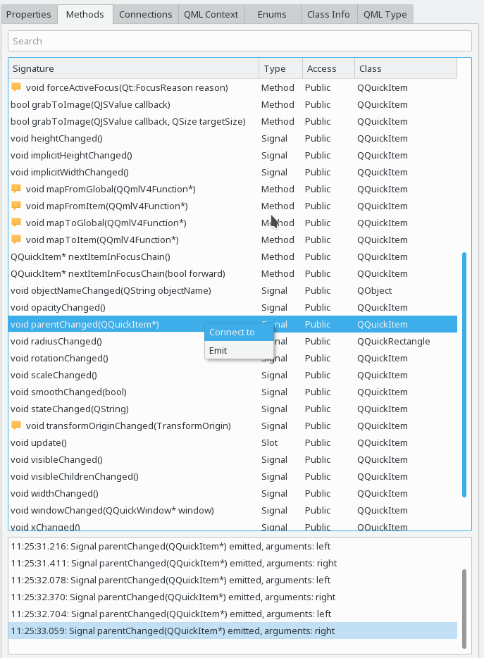
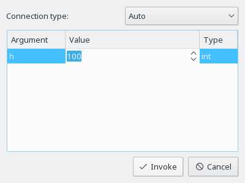

The methods view is available for all QObject and QMetaObject instances and shows methods, signals and slots declared in there.

The methods view contains four columns:
For some methods, additional information provided via QMetaMethod are available in a tooltip. A warning icon in the method name column indicates possible issues detected by GammaRay.
Methods can also be dynamically invoked, using the Invoke action from the context menu. Similarly, you can emit signals by using the Emit action from the context menu. In both cases the method invocation dialog shown below is displayed.

In the method invocation dialog you can specify any argument the method or signal may take, the types as in the Properties view are supported here too. You can also specify whether to invoke the method directly or queued.
It is also possible to monitor specific signals of the current QObject, by using the Connect to action in the context menu of the corresponding signal.
Whenever the signal is emitted, the signal log at the bottom of the methods view shows the time stamp of the emission, as well as the values of the signal arguments, if any. This can also be seen in the above screenshot.
The following examples make use of the methods view: